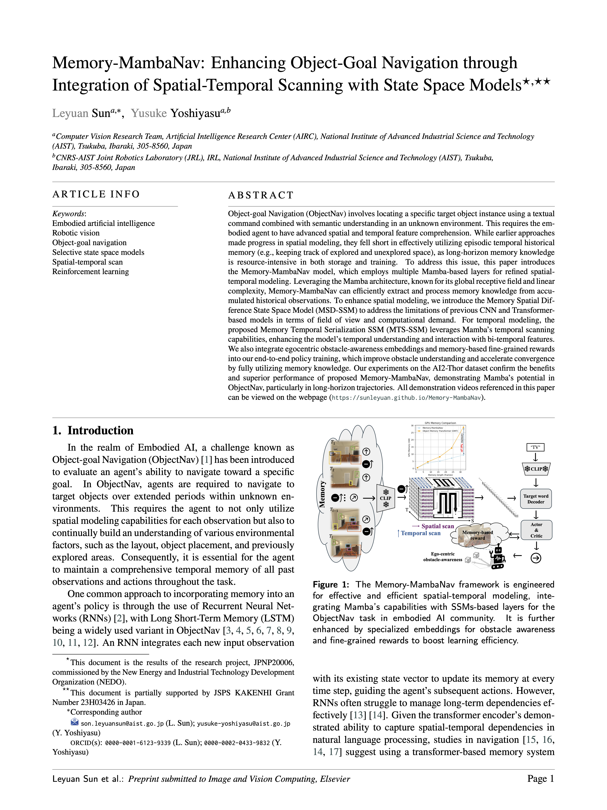

|
|
|
|
|
| The proposed Memory-MambaNav can reduce the GPU memory up tp 67.5% comapred with Transformer-based memory accumulated approach when computing over 32 historical frames. |
| Object-goal Navigation (ObjectNav) involves locating a specific target object instance using a textual command combined with semantic understanding in an unknown environment. This requires the embodied agent to have advanced spatial and temporal feature comprehension. While earlier approaches made progress in spatial modeling, they fell short in effectively utilizing episodic temporal historical memory (e.g., keeping track of explored and unexplored space), as long-horizon memory knowledge is resource-intensive in both storage and training. To address this issue, this paper introduces the Memory-MambaNav model, which employs multiple Mamba-based layers for refined spatial-temporal modeling. Leveraging the Mamba architecture, known for its global receptive field and linear complexity, Memory-MambaNav can efficiently extract and process memory knowledge from accumulated historical observations. To enhance spatial modeling, we introduce the Memory Spatial Difference State Space Model (MSD-SSM) to address the limitations of previous CNN and Transformer-based models in terms of field of view and computational demand. For temporal modeling, the proposed Memory Temporal Serialization SSM (MTS-SSM) leverages Mamba's temporal scanning capabilities, enhancing the model's temporal understanding and interaction with bi-temporal features. We also integrate egocentric obstacle-awareness embeddings and memory-based fine-grained rewards into our end-to-end policy training, which improve obstacle understanding and accelerate convergence by fully utilizing memory knowledge. Our experiments on the AI2-Thor dataset confirm the benefits and superior performance of proposed Memory-MambaNav, demonstrating Mamba's potential in ObjectNav, particularly in long-horizon trajectories. |
VTNet, ICLR 2021
IOM, ACM MM 2023
MT, ICLR 2023
Ours, M8-MambaNav
Ours, M24-MambaNav
| Kitchen |
| Bedroom |
| Living room |
|
|
| Trajetory comparisons |
M8-MamabNav, successfully fininsed with 7 steps.
Up: spatial attention, Bottom: Temporal attention (the lastest at the bottom)
M24-MamabaNav, successfully finished with 50 steps.
|  | Leyuan Sun and Yusuke Yoshiyasu Memory-MambaNav: Enhancing Object-Goal Navigation through Integration of Spatial-Temporal Scanning with State Space Models Submit to Elesiver, Image and Vision Computing 2024 Imapct Factor: 4.2 (Special issue: Embodied Artificial Intelligence for Robotic Vision and Navigation) |
Acknowledgements |